Introduction
Staff population
The HESA Staff Record covers all academic and non-academic staff who have a contract of employment with a higher education provider (HEP) in the UK, or for whom the HEP is liable to pay Class 1 National Insurance contributions. Other staff, such as those employed under consultancy contracts, or on the basis of payment of fees for services but without a contract of employment, are not included in the record.
The staff return covers data supplied by 162 HEPs; one of the English HEPs, The University of Buckingham, is a non-publicly-funded HE provider voluntarily providing data to HESA. The number of Welsh HE providers in this publication is different from the number reported in some other HESA products because of the inclusion of staff data from The University of Wales (central functions). In addition, Liverpool School of Tropical Medicine made a separate HESA staff return from 2013/14, previously their HESA staff return was made through The University of Liverpool. Students at Liverpool School of Tropical Medicine were returned to HESA through University of Liverpool in 2013/14, but will be returned separately from 2014/15.
Throughout this introduction, unless otherwise stated, staff numbers exclude atypical staff. Reporting of atypical staff was changed from the 2012/13 collection with HE providers only obliged to return atypical staff on academic contracts, therefore this publication excludes non-academic atypical staff. All figures provided in the introduction tables and text are based on full-person equivalents (FPE; headcounts) rather than full-time equivalents (FTE; weighted by proportion relative to full-time). Where data has been disaggregated by contract characteristics, such as activity, the FPE figures have been apportioned across the contract(s) held by the staff member.
Table A shows the overall pattern of staffing in UK HEPs, including academic atypical staff. In 2013/14 (that is, on 1 December 2013) there were in total, 395,780 staff (382,515 in 2012/13) in the HE sector, of whom 263,055 were full-time staff (254,490 in 2012/13) and 132,725 part-time staff (128,025 in 2012/13). In addition, there were 75,040 academic atypical staff (74,075 in 2012/13).
The total number of academic staff in 2013/14 was 194,245 (185,585 in 2012/13), an increase of 4.7% between 2012/13 and 2013/14. Of the academic staff, 128,170 (66.0%) were full-time and 66,075 (34.0%) were part-time. Chart 1 below illustrates the distribution of all full-time staff by activity (sourced from Table A).
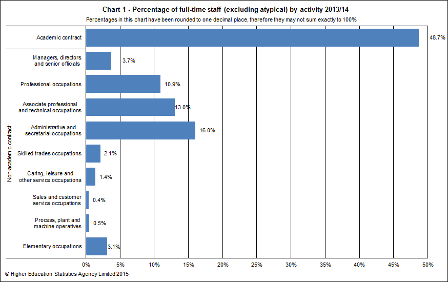Almost half (48.7%) of the full-time staff population were employed on an academic contract, compared to 49.8% for part-time staff. For the full-time staff population, 16.0% were employed within administrative and secretarial occupations and 13.0% were employed within associate professional and technical occupations.
Mode of employment and sex
Overall, females made up 53.8% of all staff and 47.0% of the academic atypical staff population. Almost half (47.2%) of all full-time staff and around two-thirds (66.9%) of all part-time staff were female.
For academic staff, the proportion of females was lower at 44.6%. For full-time and part-time academic staff, the proportion of females was 39.5% and 54.5%.
Chart 2 below provides the proportions by sex and activity of full-time staff (sourced from Table A).
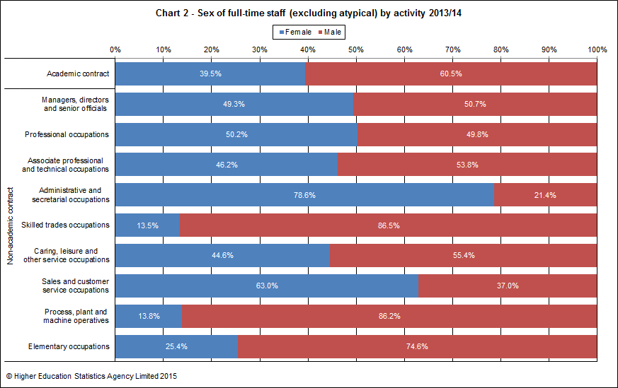Chart 3 provides equivalent data to Chart 2, but for part-time staff (sourced from Table A).
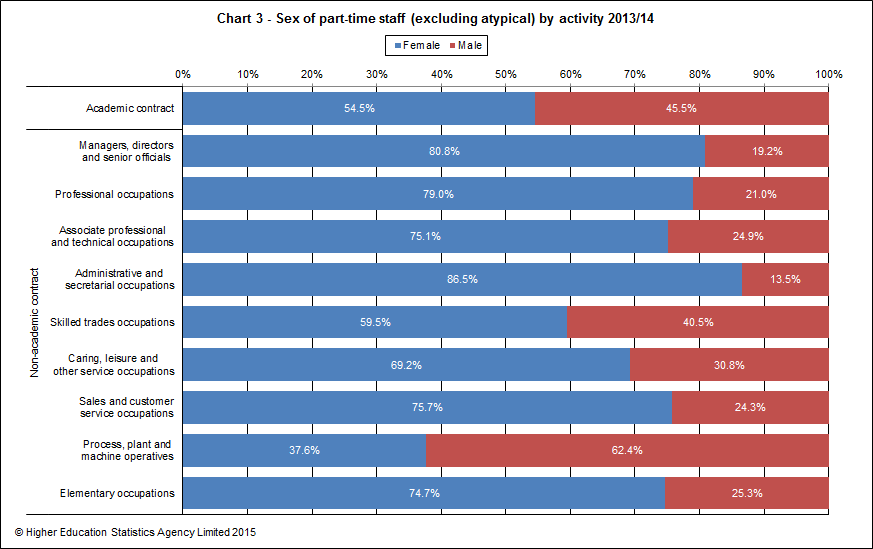Across all activities, there were higher proportions of female part-time staff than male part-time staff, except amongst process, plant and machine operatives for which there were 37.6% females compared to 62.4% males.
Table B and Table C respectively provide a breakdown of academic and non-academic staffing in HE. Atypicals have been excluded from these tables as the majority of the data is not collected for atypical staff.
Chart 4 below provides the proportions of full-time and part-time academic staff by academic employment function (sourced from Table B). Most full-time staff were in teaching and research (60.2%) whereas part-time staff had a majority in teaching only (60.7%), this compares with 61.8% and 57.2% respectively for 2012/13.
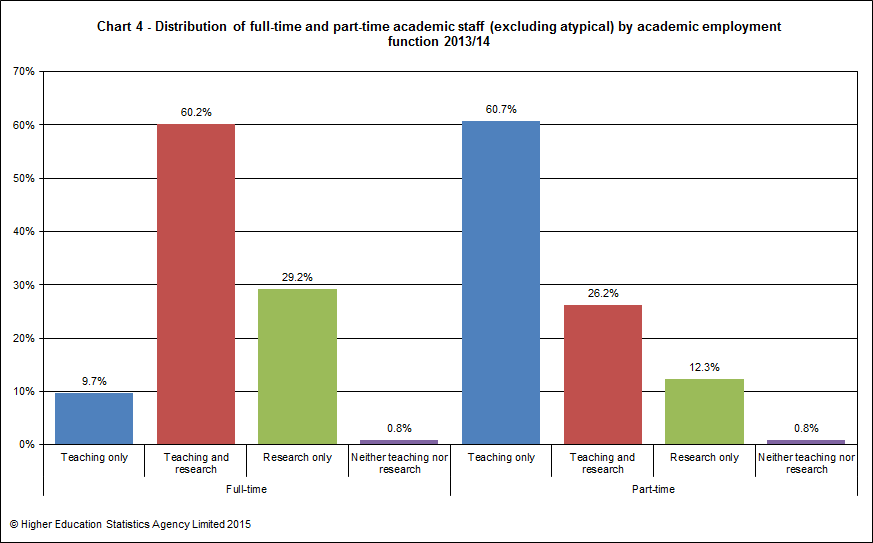Salary
The salary ranges have been defined with reference to the nationally negotiated pay spine for non-clinical staff. Salaries for part-time staff are not reported to HESA as pro-rata amounts but as salaries scaled up to full-time equivalent rates.
The majority of full-time academic staff (38.2%) had contract salaries between £42,476 and £57,032. This differed for part-time academic staff with the majority (43.8%) having lower contract salaries between £31,644 and £42,476.
Chart 5 below illustrates the distribution of female and male full-time academic staff by salary range (sourced from Table B). Higher proportions of male full-time academic staff (25.9%) had contract salaries of £57,032 or over than female full-time academic staff (13.9%).
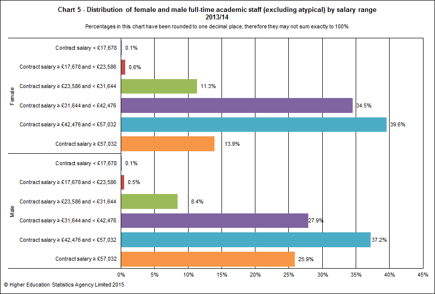The total number of non-academic staff employed by UK HEPs was 201,535. Of these, 134,885 or 66.9% were in full-time employment.
Just over half, 53.9%, of full-time non-academic posts were managerial, professional and technical. Of the non-academic part-time staff, 30.1% were in managerial, professional and technical posts and 36.9% were in clerical posts.
Chart 6 below provides the distribution of staff within each activity group by salary range (sourced from Table B and Table C).
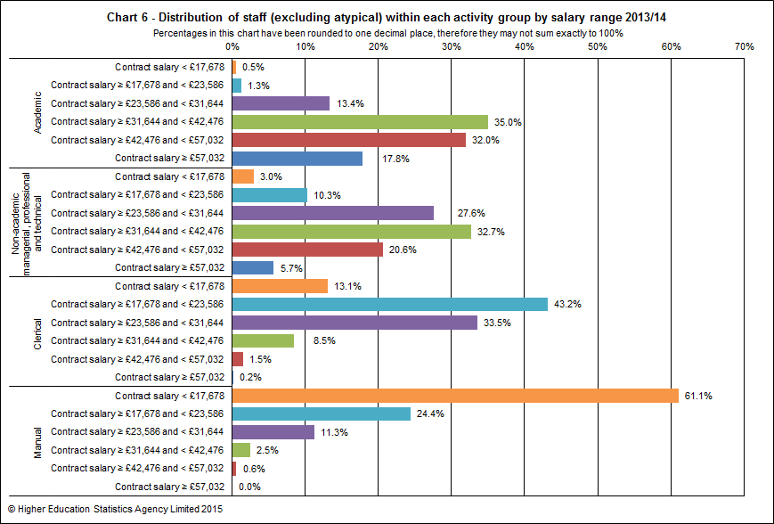Higher proportions of academic staff had contract salaries in the top three salary ranges than staff in the other activity groups. Similar proportions of academic staff (35.0%) and non-academic managerial, professional & technical staff (32.7%) had contract salaries between £31,644 and £42,476. Nearly two-thirds (61.1%) of manual staff had contract salaries less than £17,678. Over two fifths (43.2%) of clerical staff had contract salaries between £17,678 and £23,586.
Academic staff headcount 2012/13 to 2013/14
Table D provides a headcount (rather than full-person-equivalent headcount used in all other contexts) of academic staff linking between the staff records for 2012/13 and 2013/14 with a view to illustrate the number of academic staff who take up and leave academic posts at HEPs.
For the purpose of this table only, full-time academic staff are those members who spend at least 50% of their time engaged in full-time academic contracts. Similarly, part-time academic staff are those members who spend at least 50% of their time engaged in part-time academic contracts. This results in academic staff numbers that are slightly different from those given in Tables B and C. Data given in Table D also differs from that given in the main tables 20-22 which are based on staff contracts rather than headcount.
The (headcount) number of full-time academic staff has increased from 122,720 to 128,435 from 2012/13 to 2013/14, an increase of 4.7%. The number of part-time academic staff increased from 63,895 to 66,935 (4.8%) during this time.
Staff inflow counts the number of academic staff as at 1 December 2013 who were not identified as being at a UK HEP on 1 December 2012. Staff outflow counts the number of academic staff as at 1 December 2012 who were not identified as being at a UK HEP on 1 December 2013.
The inflow of staff into full-time academic posts was lower (7,845 staff; 6.1%) than the inflow into part-time academic posts (8,845 staff; 13.2%). The outflow of staff from both full-time and part-time academic posts was lower (6,670 full-time staff; 5.4%, 5,665 part time staff; 8.9%) than the inflow.
Chart 7a and 7b below illustrates the inflow and outflow, broken down by previous employment and leaving destination respectively, of full-time and part-time academic staff. High proportions of unknowns, particularly amongst the leaving destination, mean that caution must be exercised when analysing this data.
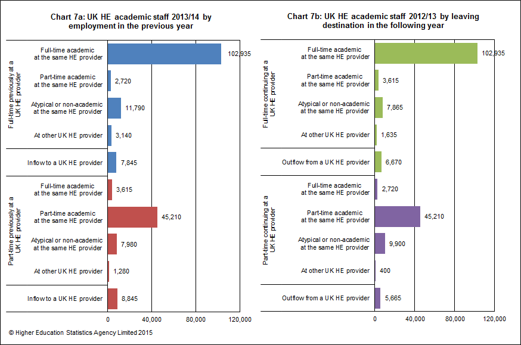Age of academic staff
Table E presents the age distribution of full-time academic staff (excluding atypical) by salary range.
Of those staff whose age was known, 41.7% were aged 46 and over and 12.6% were aged between 51 and 55.
The average age of full-time academic staff was 43.1 and of part-time academic staff, 45.9 (sourced from Table 3a). The average age of academic atypical staff was 39.8 (sourced from Table 3b).
Chart 8 provides the distribution of full-time academic staff by contract salary and age group (sourced from Table E).
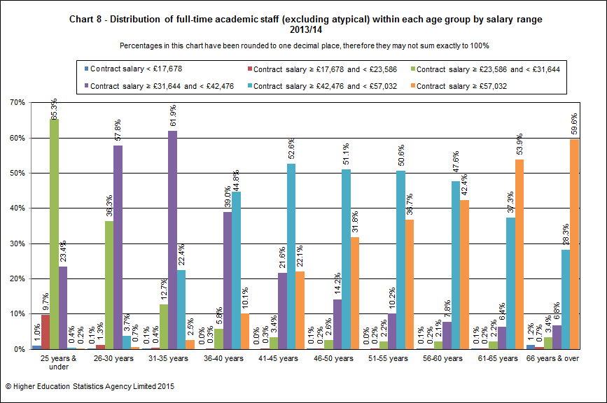In the 25 and under age group, 65.3% of full-time academic staff earned a contract salary between £23,586 and £31,664 whereas the majority (61.9%) of the 31–35 age group earned a salary between £31,664 and £42,476. In the 41–45 age group, the majority (52.6%) of full-time academic staff earned a salary between £42,476 and £57,032. In the top two age groups, 61–65 years and 66 years & over, 53.9% and 59.6% respectively earned a contract salary of £57,032 or more.
Ethnicity of all staff
In Table F ethnicity is shown broken down by activity standard occupational classification group and mode of employment. The ethnicity data within this introduction refers to staff of all nationalities.
Of all staff, 93.0% reported their ethnicity. The response rate varied slightly by activity group and mode of employment. These percentages ranged from 88.8% for part-time academic staff to 95.7% for full-time clerical staff. Among staff of known ethnicity, the proportion from ethnic minority groups varied, with greater representation among academic staff at 13.4% than among non-academic staff at 10.4%.
Ethnicity was reported for over two-thirds (72.0%) of academic atypical staff. Of those academic atypical staff of known ethnicity, 16.5% were from ethnic minority groups.
Table G provides the ethnic breakdown of staff by activity standard occupational classification group for all staff, including academic atypical. The chart series 9 below illustrate the data from Table G in pie chart format for all staff, excluding atypical.
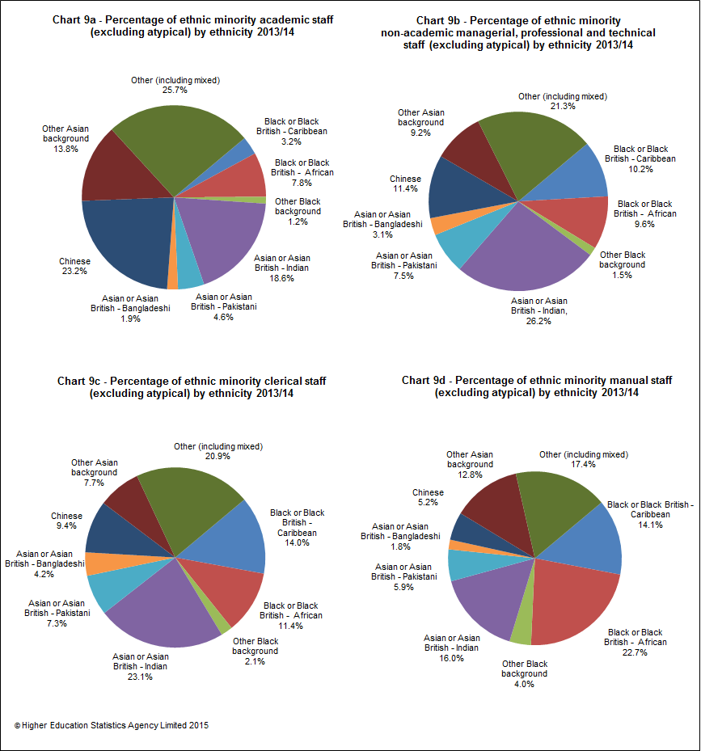Disability of all staff
Table H presents information on disability by activity standard occupational classification group and mode of employment for all staff, in a similar style to Table F.
Disability status was reported for 96.3% of all staff. Of those of known disability status, 4.4% declared a disability. For academic staff, the percentages were 96.2% reported and 3.8% declared disabled. For academic atypical staff the percentages were 91.4% reported and 2.2% declared disabled.
Table I provides a disability breakdown, based on the staff members’ own assessment, by activity standard occupational classification group. The chart series 10 below illustrate the data from Table I in pie chart format for all staff, excluding atypical.
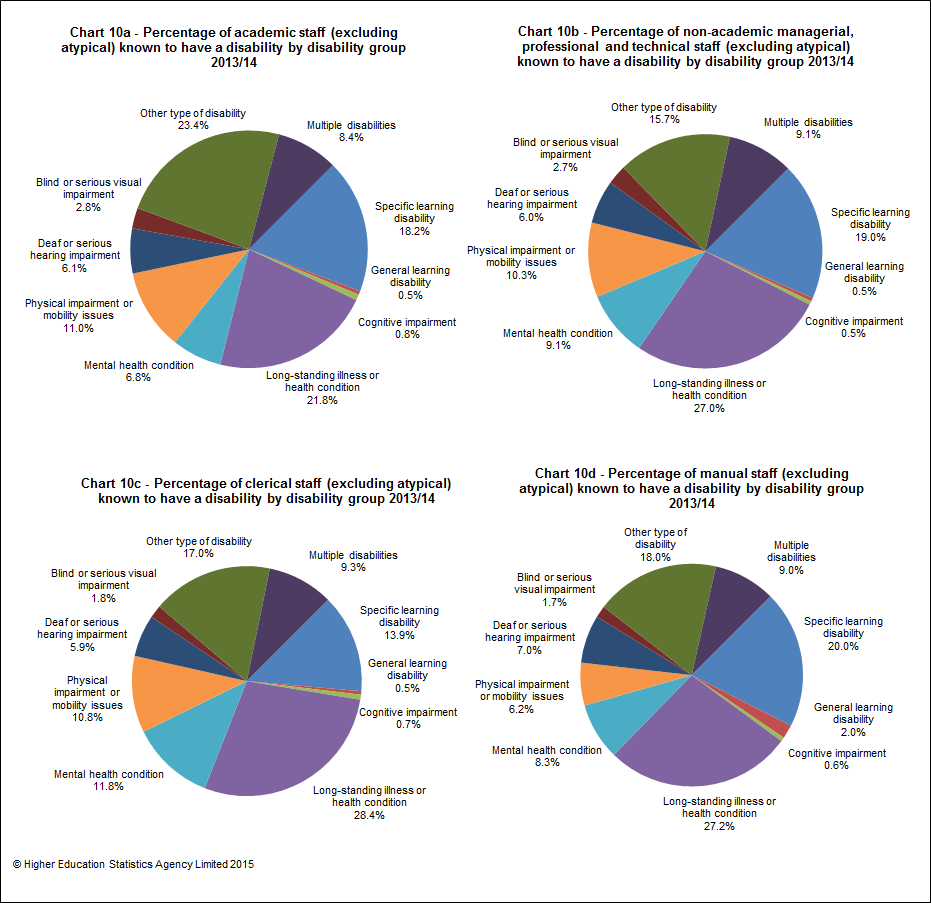Funding, contract levels and sex of full-time academic staff
Table J provides data on full-time academic staff by clinical status, contract level, sex and source of basic salary. Of all full-time academic posts, 71.6% were wholly financed by the HE providers themselves.
The proportion of women among full-time clinical academic professors was 18.4% and among non-clinical academic staff professors was 22.9%. These figures for those recorded as being other senior academics was 28.3% for clinical senior academics and 32.5% for non-clinical senior academics. Of those staff who were on other contracts, 44.6% of full-time clinical academic staff were female and 42.2% of non-clinical academic staff were female.
46.2% of full-time clinical academic staff were wholly financed by the HE provider compared with 72.8% of non-clinical full-time academic staff. This reflects the greater prevalence of joint funding arrangements for clinical staff such as joint contracts involving the NHS.
Of all full-time clinical academic staff, 23.8% were professors compared with 11.7% of non-clinical full-time academic staff.
Cost centre distribution of full-time academic staff
The data in Table K provides a breakdown of full-time academic staff by cost centre group, source of basic salary and sex.
Overall, 28.4% of full-time academic staff were not wholly financed by the HE provider. Just under half (46.1%) of full-time academic staff in medicine, dentistry & health and 44.3% in biological, mathematical & physical sciences were not wholly financed by the HE provider. Academic cost centre groups with the lowest percentage of partially or wholly externally funded full-time academic staff were in the areas of premises 0.2%, design, creative & performing arts 3.0% and administrative & business studies 4.9%.
Chart 11 below provides the proportions by sex and cost centre group of full-time academic staff (sourced from Table K). Over a third (34.3%) of female full-time academic staff were employed within the medicine, dentistry & health cost centre group compared to just under a fifth (19.9%) of males. In contrast, over three times the proportion of males (18.8%) than females (6.0%) were employed in the engineering & technology cost centre group.
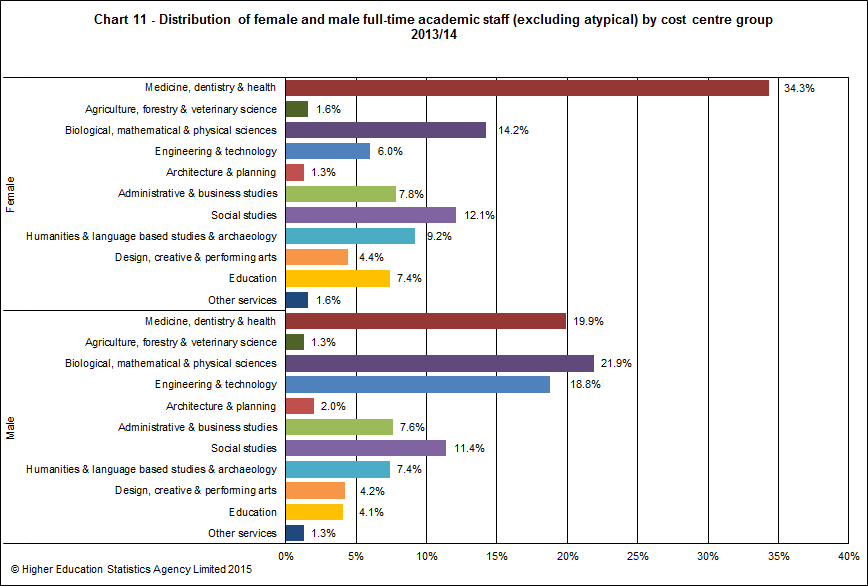Pattern of employment of academic staff
Table L shows academic staff by academic employment function, sex, mode of employment and terms of employment.
Among staff who only had teaching responsibilities, the majority of full-time staff were on open-ended/permanent contracts, 79.6% female and 81.8% male, whereas the majority of part-time staff were on fixed-term contracts, 66.0% female and 69.0% male. Of the staff with both teaching and research responsibilities, 93.7% of full-time staff were on open ended/permanent staff contracts. The opposite was true of research only staff, who had a high proportion of fixed-term contracts in both full-time, 67.5% female and 67.1% male, and in part-time, 61.9% female and 69.9% male.
Chart 12 below illustrates the proportions of open-ended/permanent and fixed-term contract academic staff by academic employment function, mode of employment and sex.
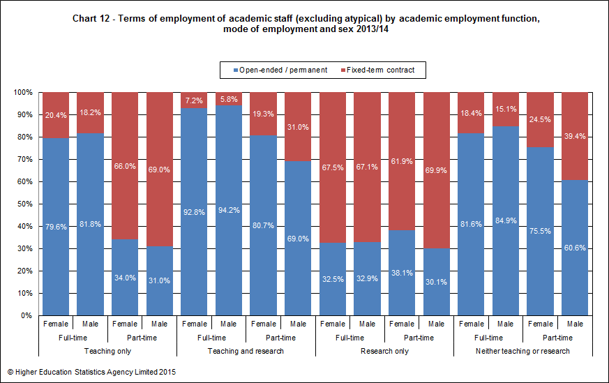© Higher Education Statistics Agency Limited 2015